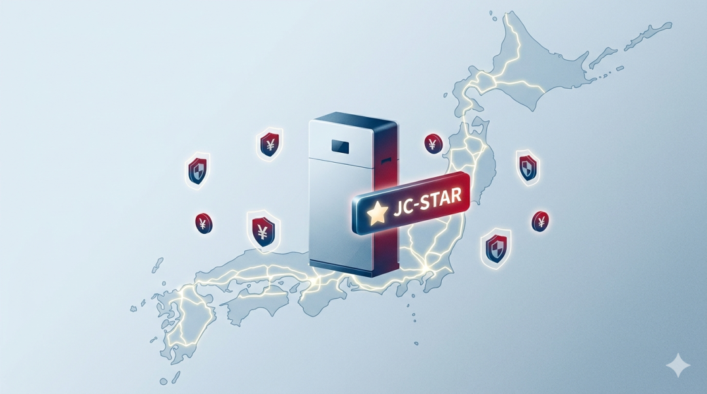
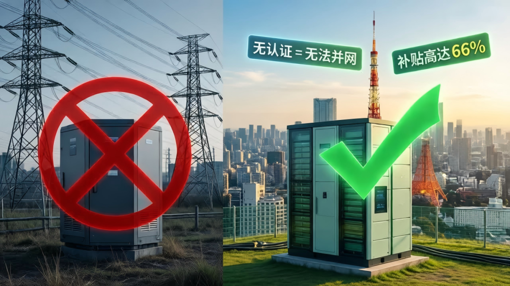
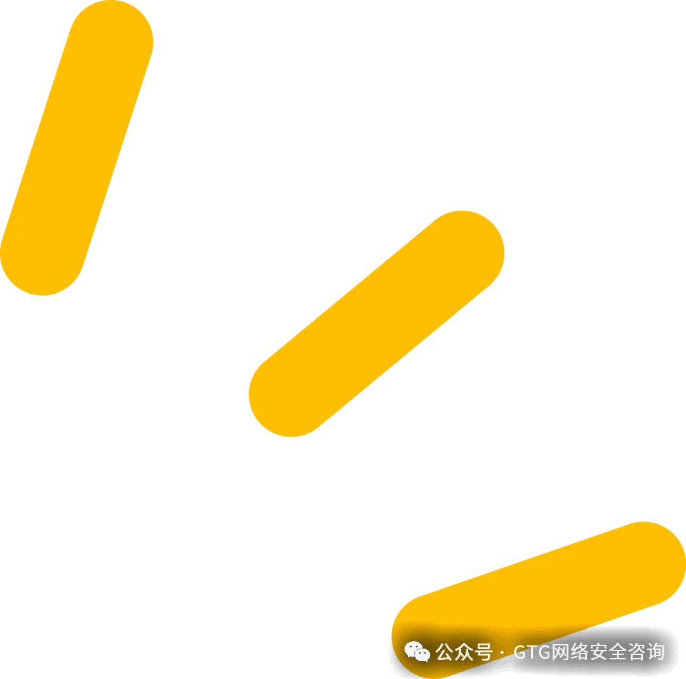
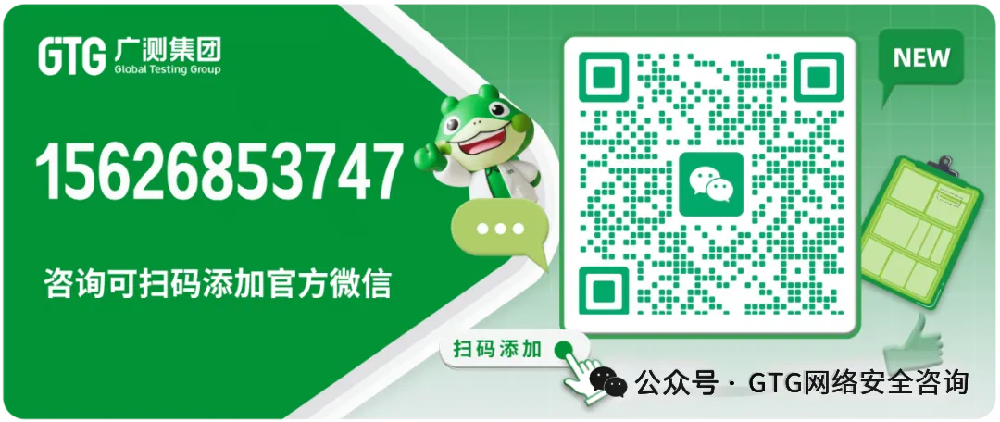

想把储能产品卖到日本、拿政府与电力公司高额补贴、顺利并网？JC-STAR 认证已经从 “加分项” 变成 “必答题”。本文基于 IPA 官方信息，一次性讲透 JC-STAR 是什么、谁要做、为什么做、怎么做、多少钱、多久过、怎么不翻车。
一、什么是 JC-STAR 认证
JC-STAR（Japan Cyber STAR） 是日本经济产业省（METI）主导、信息处理推进机构（IPA）执行的物联网产品网络安全符合性评估与标签制度，全称：Labeling Scheme based on Japan Cyber‑Security Technical Assessment Requirements。
-
核心：验证 IoT 产品满足日本统一网络安全技术基线
-
兼容国际：ETSI EN 303 645、NISTIR 8425 等标准
-
分级：★1～★4 四档，目前STAR‑1 已开放申请，更高等级逐步落地
-
定位：日本 IoT / 储能产品安全合规的官方标尺
二、哪些产品需要做 JC-STAR 认证
JC-STAR 面向具备 IP 通信能力、用户难以自行加固安全的物联网产品，重点覆盖：
-
家用 / 工商业储能系统（ESS）、BMS 电池管理系统、PCS 变流器
-
智能家居、网关、路由器、摄像头
-
工业传感器、控制器、关键基础设施联网设备
-
为 IoT 设备提供支撑的云服务、APP、后台管理平台
明确排除：PC、手机、平板等通用 IT 设备（用户可自行装安全软件）
三、为什么要做 JC-STAR？储能必看：强制并网 + 高额补贴

JC-STAR 名义自愿，对储能却是硬门槛：
- 并网强制
日本电网新规：无 JC-STAR★1 认证，储能整机 / 核心部件无法并网、不能卖电、拿不到电力公司接入许可。
-
政府 + 电力公司补贴前提
-
日本国家级 / 地方自治体储能补贴**最高补贴比例约 66%**，以 JC-STAR 为必要条件
-
电力公司采购、政府能源项目优先 / 只采购已认证产品
-
市场与合规红利
-
清关顺畅、降低网络安全事故风险
-
提升品牌可信度，形成合规壁垒
-
适配全球 IoT 安全监管趋势（欧盟 CRA、英国 PSTI 等）
四、JC-STAR 认证申请流程（以 STAR‑1 为例）
- 产品范围判定 + 等级确认
储能优先做STAR‑1，满足并网与补贴要求。
- 自我符合性评估
对照 STAR‑1 16 项基础要求，完成自查、形成评估清单与证据包。
- 技术文档与材料准备
申请表、符合性声明、产品规格、BMS/PCS 安全设计、漏洞管理流程、日志策略、更新机制等。
- 提交 IPA+METI 审核
通过指定平台提交，官方审核并可能要求补件。
- 缴费→获标签
审核通过后缴费，获得2 年有效期JC-STAR 合规标签。
- 标签使用与证据留存
加贴标识，有效期内完整留存评估证据备查。
五、JC-STAR 测什么？STAR‑1 核心测试项
STAR‑1 为基础级，覆盖16 项通用安全要求，储能产品重点测：
-
身份认证与弱口令 / 默认口令治理
-
安全更新机制与漏洞披露流程
-
通信加密、数据保护
-
安全日志≥90 天留存、关键操作可追溯
-
漏洞管理全生命周期流程
-
物理安全、基础访问控制
-
BMS 通信安全、防非法接入、参数防篡改
六、认证周期、费用（2025‑2026 最新）
周期
-
自我评估 + 材料准备：2 周
-
产品整改：2\~4周
-
官方审核：3\~5 周
-
整体最快：约 5\~7 周；复杂产品 / 整改：8\~10 周
费用
-
STAR‑1 官方费用：198,000 日元（约人民币 9,500 元）
-
含：评估、注册、标签使用，有效期2 年
-
不含：第三方预测试、整改、翻译、技术辅导费用
七、储能产品 JC-STAR 最容易 Fail 的 8 个经典坑
-
默认口令 / 弱口令未整改，出厂仍用 admin/123456
-
无安全更新机制，或更新不校验、易被劫持
-
日志不满足 90 天，关键操作无记录、不可审计
-
BMS/PCS通信未加密，易被抓包篡改参数
-
无正式漏洞管理流程，无上报 / 修复 / 披露机制
-
接口 / 后台越权访问，未做权限隔离
-
物理接口未做安全限制，易本地破解
-
文档与实际不一致，证据链缺失
八、选择 GTG 网络安全实验室：储能 JC-STAR 实战专家
GTG 网络安全实验室是国内深耕日本 JC-STAR 认证的专业机构，尤其在储能系统、BMS、PCS领域拥有大量实战与成功案例：
-
已辅导近十家储能厂商一次性通过 JC-STAR★1
-
精通日本 IPA/METI 审核口径，精准踩点、少走弯路
-
提供预审→整改→文档→提交→拿证全流程托管
-
储能专属测试用例，直击高频 Fail 点，大幅提升通过率
不管你是家用储能、工商业储能，还是 BMS/PCS 核心部件，GTG 都能帮你稳拿补贴、顺利并网。
结语
日本储能市场红利巨大，但安全合规是入场券。JC-STAR 不是成本，而是卖进日本、拿到补贴、长期立足的必备投资。
🔒 GTG广测集团 | 全球数字安全合规首选伙伴

GTG网络安全实验室
🔐 GTG广测集团 | 全球数字安全合规首选伙伴
别让合规只停留在“拿证”。
面对欧盟 CRA网络弹性法案、AI法案及GDPR/CCPA/数据法案等严苛监管，GTG凭借CNAS+A2LA双资质及前360/深信服核心网络安全专家团队，为您提供真正的“实战级”防护。
🏆 GTG如何为您的产品保驾护航？
✅ 合规认证：确保您的产品符合欧洲市场准⼊要求
✅ 渗透测试 & 漏洞评估：模拟⿊客攻击，提前发现安全隐患
✅ 安全架构设计咨询：从底层优化产品安全性能
✅ 全球法规适配：协助企业满⾜不同国家的IoT安全标准（如中国GB/T、英国PSTI）
🏆 为什么GTG能为您降本避险？
✅ 拒绝模板：不只给报告，我们提供定制化漏洞修复方案，确保产品真安全。
✅ 极致省心：代写核心文档，免除繁琐填表，让合规效率提升70%。
✅全域覆盖：从消费电子到汽车、工控、医疗，一站式解决全球隐私与数据安全难题。
您的全球合规通行证，从这里开始。
[👉 立即咨询 CRA / AI法案 / 隐私合规]
更多相关内容
欢迎关注视频号“GTG网络安全实验室”
了解更多网络安全详情。
